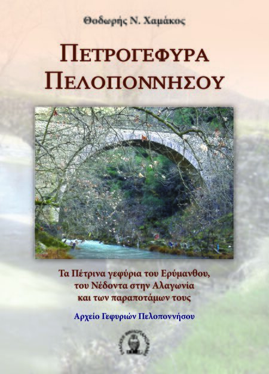

Πετρογέφυρα Πελοποννήσου
Τα πέτρινα γεφύρια του Ερύμανθου, του Νέδοντα στην Αλαγωνία και των παραποτάμων τους
Συγγραφέας: Θοδωρής Χαμάκος
ISBN: 9786185565046
Εκδόσεις: Βιβλιοπανόραμα www.bibliopanorama.gr

Τα πέτρινα γεφύρια του Ερύμανθου, του Νέδοντα στην Αλαγωνία και των παραποτάμων τους
Συγγραφέας: Θοδωρής Χαμάκος
ISBN: 9786185565046
Εκδόσεις: Βιβλιοπανόραμα www.bibliopanorama.gr
Οδοιπορώντας στο Ζαγόρι
Συγγραφέας: Σπύρος Μαντάς - Θοδωρής Χαμάκος
ISBN: 9789602960745
Εκδόσεις: Νίκα www.nikasbooks.gr
Ανάτυπο από τα πρακτικά της Α' επιστημονικής συνάντησης ΚΕΜΕΠΕΓ
Συγγραφέας: Θοδωρής Χαμάκος
Εκδόσεις: ΚΕντρο ΜΕλέτης ΠΕτρινων Γεφυριών (ΚΕΜΕΠΕΓ)